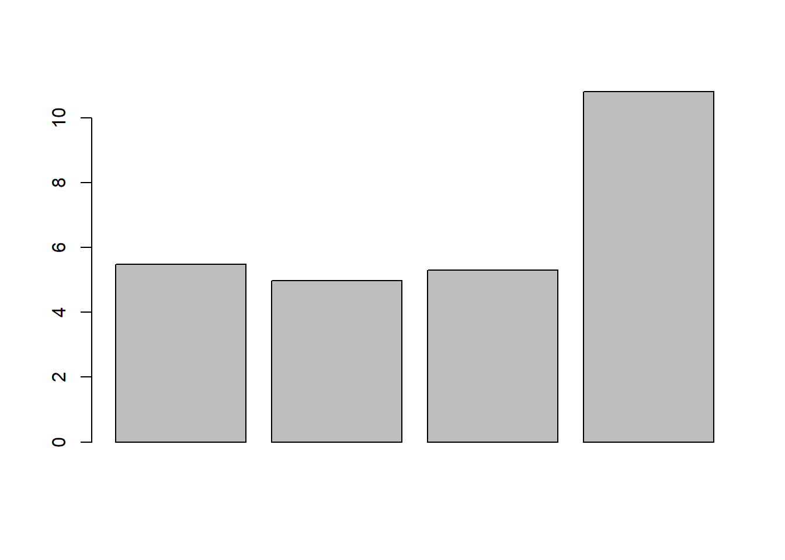
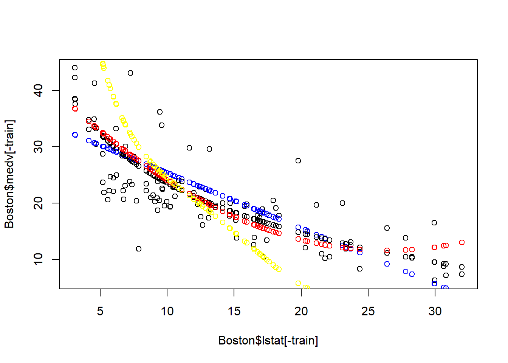
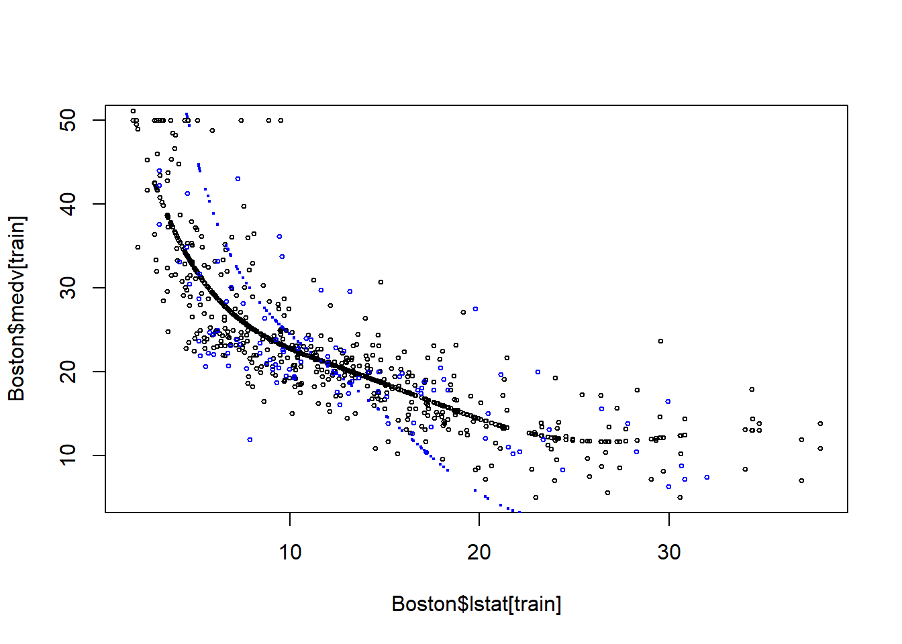

Chapter 22 Model Selection with Training/Test Set
Load the packages needed for this chapter:
Using Adj-R, Cp, AIC, and BIC is convenient, but only work for linear models. Here we introduce another approach which can be used to select the best among any types of models: Use training set and test set for model selection. This is a very widely used method in any statistical and machine learning applications.
The ultimate goal of any predictive models is to predict the future. Thus, to determine which model is best, the straightforward criteria for model selection is how well the model can predict the future.
However, we typically do not wait for the future to unfold and then use this additional data to test our model. This is time consuming and the future may have been quite different from the time when the original dataset is collected.
Therefore, a more feasible way is to divide the data into two sub-datasets of training set and test set:
- training set: the data used to estimate (also called “train”) the model.
- test set: the data that is not used in training the model and thus used to test the prediction performance of the model.
The prediction performance of the model over the training set is called the in-sample prediction performance; while the prediction performance of the model over the test set is called out-of-sample prediction performance. Because the model is specifically calibrated to the training set, thus the in-sample prediction performance might be slightly better than out-of-sample. However, if the out-of-sample prediction is much worse than the in-sample prediction, then we have a problem of over-fitting: the model is too specific to the training data, and cannot be generalizable for out-of-sample prediction.
The training/test model selection method is good way to detect and avoid over-fitting.
22.1 Create training/test set
There is no definitive rule on how much proportation of data goes to training set or test set. A typical rule of thumb is 80% of data goes to training set and 20% goes to test set.
Boston=fread("data/Boston.csv") # load the data into R
Boston[,location:=factor(location)]
Boston[,chas:=factor(chas)]
num_row=nrow(Boston) # check the number of rows
# Random select the training set
set.seed(1) # set the rand seed to ensure replicability
train_size=round(0.8*num_row,0) # set the size of training set
# randomly select train_size=300 numbers from the sequence of 1 to nrow(Boston)=506
train=sample(1:num_row, train_size, replace=FALSE)
# the index of rows selected as training set
head(train) ## [1] 505 324 167 129 418 471## crim zn indus chas nox rm age dis rad tax ptratio black lstat
## 1: 0.10959 0 11.93 0 0.573 6.794 89.3 2.3889 1 273 21.0 393.45 6.48
## 2: 0.28392 0 7.38 0 0.493 5.708 74.3 4.7211 5 287 19.6 391.13 11.74
## 3: 2.01019 0 19.58 0 0.605 7.929 96.2 2.0459 5 403 14.7 369.30 3.70
## 4: 0.32543 0 21.89 0 0.624 6.431 98.8 1.8125 4 437 21.2 396.90 15.39
## 5: 25.94060 0 18.10 0 0.679 5.304 89.1 1.6475 5 666 20.2 127.36 26.64
## 6: 4.34879 0 18.10 0 0.580 6.167 84.0 3.0334 5 666 20.2 396.90 16.29
## location medv
## 1: south 22.0
## 2: west 18.5
## 3: north 50.0
## 4: east 18.0
## 5: west 10.4
## 6: south 19.9## crim zn indus chas nox rm age dis rad tax ptratio black
## 1: 0.02985 0.0 2.18 0 0.458 6.430 58.7 6.0622 3 222 18.7 394.12
## 2: 0.08829 12.5 7.87 0 0.524 6.012 66.6 5.5605 5 311 15.2 395.60
## 3: 0.21124 12.5 7.87 0 0.524 5.631 100.0 6.0821 5 311 15.2 386.63
## 4: 0.17004 12.5 7.87 0 0.524 6.004 85.9 6.5921 5 311 15.2 386.71
## 5: 0.22489 12.5 7.87 0 0.524 6.377 94.3 6.3467 5 311 15.2 392.52
## 6: 0.11747 12.5 7.87 0 0.524 6.009 82.9 6.2267 5 311 15.2 396.90
## lstat location medv
## 1: 5.21 south 28.7
## 2: 12.43 west 22.9
## 3: 29.93 north 16.5
## 4: 17.10 north 18.9
## 5: 20.45 north 15.0
## 6: 13.27 north 18.922.2 Model selection
Let’s revisit the simple linear model in the first chapter. We have talked about four different models:
- Model 1: Simple linear model
- Model 2: log-transformation
- Model 3: quadratic terms
- Model 4: \(6^{th}\) order polynomial terms
Some of these are not the typical linear regression model, so we cannot rely on Adj-R2, CP, AIC, and BIC to select the best model. We will show how to use the training/test set for model selection.
22.2.1 estimate the model using training set
fit1=lm(formula=medv~lstat, data=Boston[train])
fit2=lm(formula=medv~log(lstat), data=Boston[train])
fit3=lm(formula=medv~lstat+I(lstat^2), data=Boston[train])
fit4=lm(formula=medv~poly(lstat,6), data=Boston[train])Note that, instead of using the whole Boston dataset, we use the training set (i.e., Boston[train]) to estimate each model.
22.2.2 evaluate the models’ out-of-sample prediction using test set
The next step is to evaluate the out-of-sample prediction performance of each model over the test set.
Let’s first evaluate the prediction performance for model 1: the simple linear model.
## (Intercept) lstat
## 35.1909859 -0.9839224Model 1 use lstat to predict medv according to the linear equation: \[medv=35.19-0.984*lstat\]
To use the estimated model for prediction over test set, we need to make the test set in the appropriate format so that we can apply the above model on test set:
# use the same formula as model 1 to create test set in the appropriate format
test_set1=model.matrix(medv ~ lstat,data=Boston[-train,])
head(test_set1)## (Intercept) lstat
## 1 1 5.21
## 2 1 12.43
## 3 1 29.93
## 4 1 17.10
## 5 1 20.45
## 6 1 13.27Note that model.matrix() function constructs the matrix of test set according to the formula. Accordingly, the test set will have the same structure of the training set.
Given the value of lstat in test_set1, we can predict the corresponding medv. For example, on the first row in test_set1, lstat=4.03; based on the estimated model 1, the prediction is \[medv=35.19*1-0.984*5.21=30.063\]
Similarly, we can generate prediction of medv for each row in the test set. We can use do this using matrix multiplication operator %*%:
You have now generated the prediction over the test set based on the model 1. Now we need to evaluate how close our prediction is to the actual medv. The most common measure of prediction accurary is the Mean Square Error (MSE) and rMSE (root of MSE). MSE is defined as \[MSE=\sum_{i=1}^{N} (\hat{y}_i-y_i)^2/N\] where N is the number of observations in the test set, \(\hat{y}_i\) denotes the prediction of \(y_i\)
Once we compute MSE, we can easily derive rMSE as follow: \(rMSE=\sqrt{MSE}\), which has the same unit as the dependent variable y.
Thus, the out-of-sample MSE and rMSE for model 1 is thus:
Now, we can evaluate the out-of-sample prediction performance for model 2, 3, and 4.
## (Intercept) log(lstat)
## 1 1 1.650580
## 2 1 2.520113
## 3 1 3.398861
## 4 1 2.839078
## 5 1 3.017983
## 6 1 2.585506## (Intercept) log(lstat)
## 53.01142 -12.78838## (Intercept) lstat I(lstat^2)
## 1 1 5.21 27.1441
## 2 1 12.43 154.5049
## 3 1 29.93 895.8049
## 4 1 17.10 292.4100
## 5 1 20.45 418.2025
## 6 1 13.27 176.0929## (Intercept) lstat I(lstat^2)
## 43.91219487 -2.44764033 0.04632758## (Intercept) poly(lstat, 6)1 poly(lstat, 6)2 poly(lstat, 6)3 poly(lstat, 6)4
## 1 1 -0.109382860 0.10342524 -0.06311194 -0.006450109
## 2 1 -0.009075806 -0.08091071 0.07363182 0.041093316
## 3 1 0.234050709 0.22029148 0.09853260 -0.036788445
## 4 1 0.055804241 -0.10413246 -0.04675712 0.100022817
## 5 1 0.102345602 -0.07433528 -0.13675073 -0.002239732
## 6 1 0.002594267 -0.09065044 0.05790804 0.066203752
## poly(lstat, 6)5 poly(lstat, 6)6
## 1 0.07026449 -0.10551735
## 2 -0.09630236 0.02686326
## 3 -0.15483663 -0.19814064
## 4 0.04191693 -0.09942813
## 5 0.12910801 0.04331152
## 6 -0.09009815 -0.01076696## (Intercept) poly(lstat, 6)1 poly(lstat, 6)2 poly(lstat, 6)3 poly(lstat, 6)4
## 22.846914 -141.041172 62.799446 -24.130962 20.693769
## poly(lstat, 6)5 poly(lstat, 6)6
## -17.518414 3.118383Now, we have compute the out-of-sample performance measured by rMSE for each model, we can pick the model with the minimum rMSE, which will be our best model:
## [1] 5.471329 4.973909 5.305180 10.804961 As seen, model 2 (the log-transformation) is the winner.
We can plot the prediction over the test set to see the result visually:
plot(Boston$lstat[-train], Boston$medv[-train])
points(Boston$lstat[-train], pred1,col="blue")
points(Boston$lstat[-train], pred2, col="black")
points(Boston$lstat[-train], pred3, col="red")
points(Boston$lstat[-train], pred4, col="yellow")
As seen, the log-transformation models seems to be the best model for prediction over test set. The quadratic model and polynomial clearly suffer from over-fitting – these cannot be generaliziable on the test set.
22.3 Model 4 has the problem of over-fitting
plot(Boston$lstat[train], Boston$medv[train], cex=0.5)
points(Boston$lstat[train], fitted(fit4), cex=0.5)
points(Boston$lstat[-train], Boston$medv[-train], col="blue", cex=0.5)
points(Boston$lstat[-train], pred4, col="blue",cex=0.3)
22.4 Other Commonly Used Metrics for Prediction performance
In addition to MSE and rMSE, we usually report the following two metrics for the prediction performance:
- MAE (Mean Absolute Error): measures the average gap between our prediction and the actual y-variable.
- MAPE (mean absolute percent error): mean the average percent gap between our prediction and the actual y-variable.
Let’s compute and report the MAE and MAPE for our best model:
## [1] 3.799601## [1] 0.1931064This suggests that our prediction is on average off by 3.8 or 19.% as compared to the actual medv value. Well, a positive way to look at this is that there is plenty room for improvment. Remember, we only include one variable yet. In the next chapter, we will use training and set to select the model from the best subset regression.
22.5 Summary
- The ultimate criteria for model selection is the out-of-sample prediction performance.
- We can divide the dataset into training set and test set. The training set is used to estimate the model; the test set is used to evaluate the out-of-sample prediction.
- The common measure of prediction performance for model selection is rMSE and MSE.
- We also report MAE and MAPE to get a sense of how off/good our prediction is.